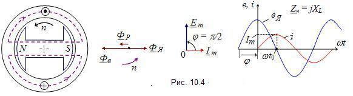

При индуктивной
нагрузке jXL
(рис. 10.4) сдвиг фаз (угол φ) между
током и питающим её напряжением равен 90°. Напряжение (ЭДС) опережает
по фазе ток на 90°. Если при t = t0
ток нагрузки имеет максимальное значение Im,
то ЭДС якоря равна нулю. В этом случае ось магнитного потока Фв
ротора совпадает с осью обмотки фазы А,
а магнитный поток якоря Фя
направлен навстречу магнитному потоку Фв
ротора. 
Результирующий магнитный поток Фр
будет меньше магнитного потока Фв.
Следовательно, индуктивная нагрузка создаёт
размагничивающую составляющую реакции якоря, называемую продольной.
При этой составляющей оси магнитных потоков совпадают (угол Θ = 0); дополнительный момент сопротивления на валу не возникает. |